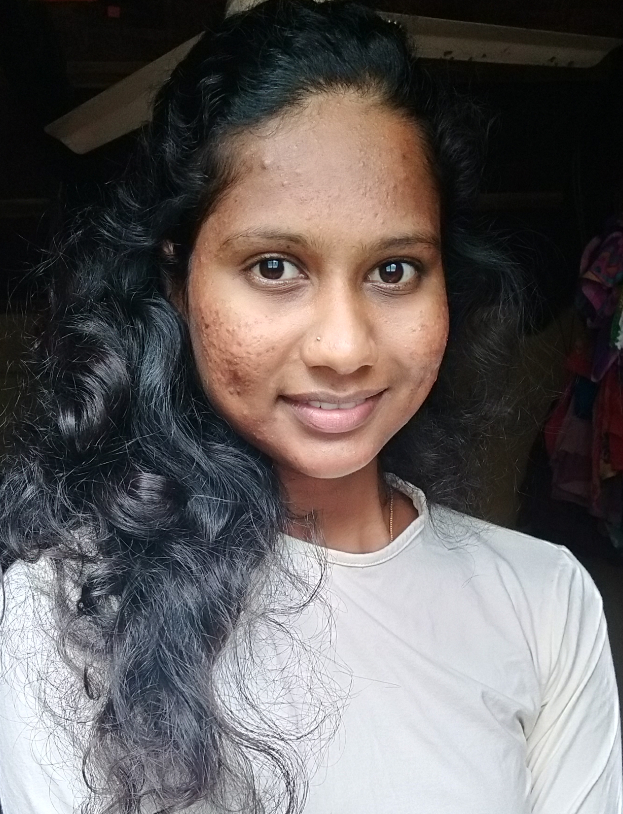

Full Stack Developer Chithra
Phone:8618296251
EmailId:chithragt97@gmail.com
#3-46, ThulasiNilaya, Kome Road
Near Nagabana, Thekkatte,kundapur-576231

OBJECTIVE
To be an enthusiastic and motivated professional, and be the part of a challenging work environment where I can use my skills towards a sense of achievement and for the growth of the organization.
| Sl.no | Name of the institution | Name of the course | Year of passing | Marks secured |
| 1. | NMAM Institute of Technology,Nitte | Master of Computer Application | 2020 | 7.96CGPA | 2. | MadhavaPai Memorial College,Manipal | Bachelor of Computer Application | 2018 | 74.46% |
| 3. | Viveka PU College, Kota | PUC - Science | 2015 | 75.83% |
| 4. | Viveka Girls High School, Kota | SSLC | 2013 | 76.96% |
| Sl.No | Title | Description | Duration |
| 1. | �Student Management System� | Managing the process of college and students. | 4 Months |
| 2. | �Mobile Shop Management� | Managing the mobile shop. | 2 Months |
| 3. | �Image Slide Show� | Slide show of the image | 1 Month |
| 4. | �Online Tech-Store� | Provide services to the customer if they are facing hardware and software related problem | 4 Months |